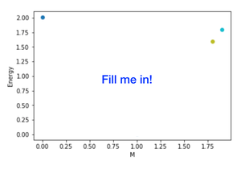
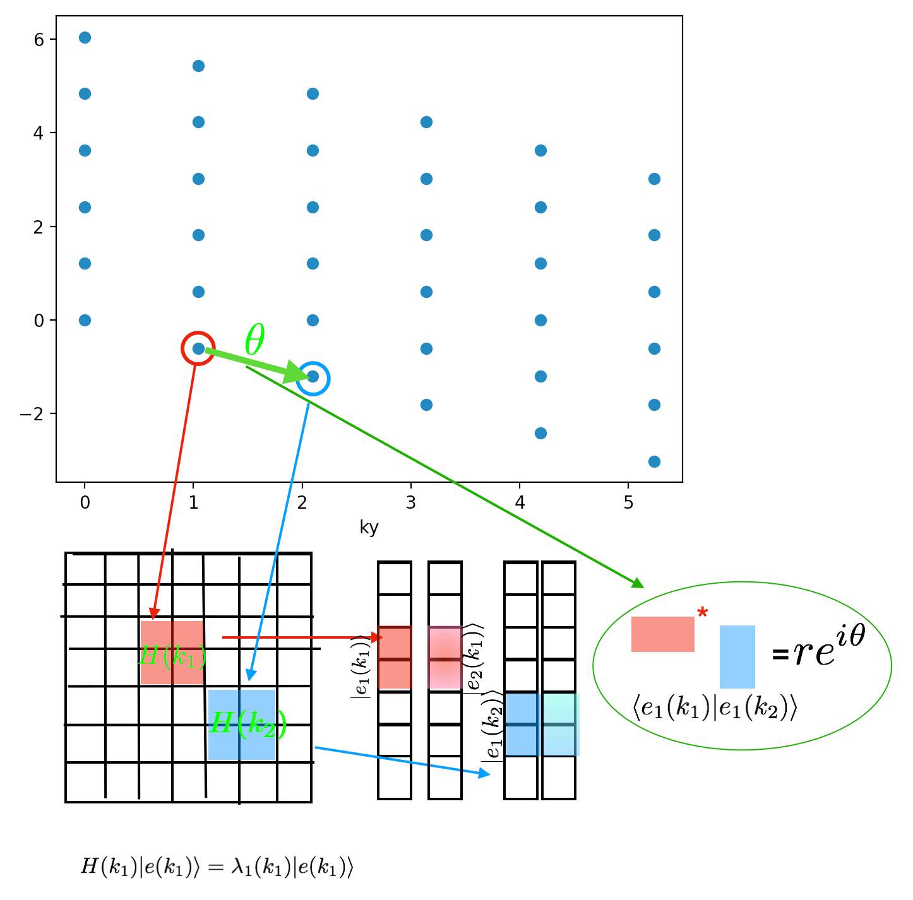
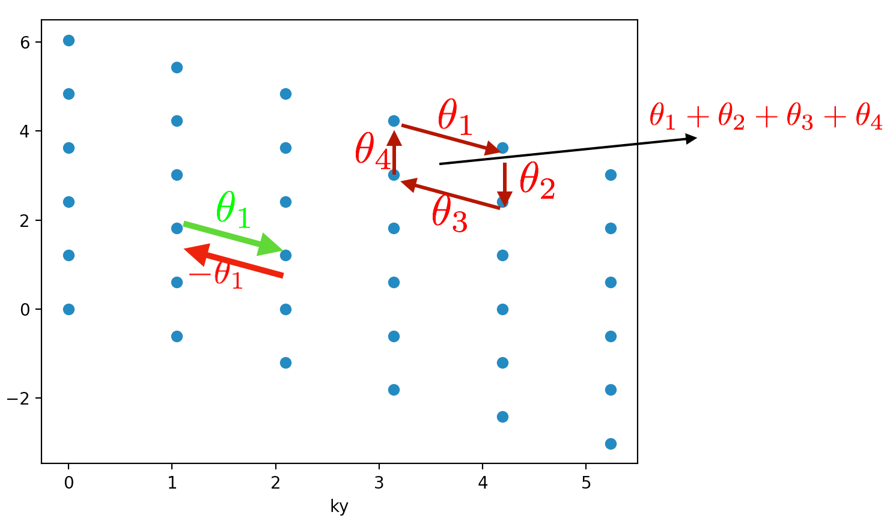
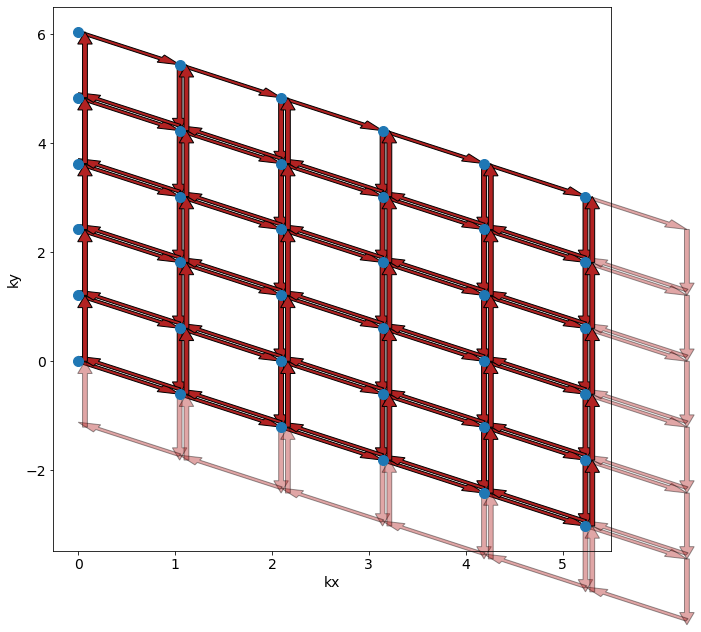
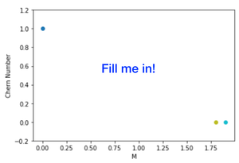

Topological Insulators
Contents
Topological Insulators#
This page makes 40% of the grade
In this section we are going to work with Haldane model from page 2 (remember this Hamiltonian includes both nearest neighbor hopping, the mass term \(M\), and the second nearest neighbor terms).
We will set
\(t'=0.3\) (it should be negative numbers in your Hamiltonian)
\(\phi=0.7\)
We will adjust \(M\) writing the Hamiltonian as \(H(M)\).
We are going to show that the Hamiltonian \(H(M)\) can be in two different phases - a band insulator and Chern insulator - depending on the value of \(M\).
To accomplish this:
Show that there is a gapless points as we tune \(H(M)\) from \(0<M<2\). Having a gapless point on any continuous path of Hamiltonians is a necessary requirement for two gapped Hamiltonians to be in two different phases.
Show that the Chern Number is 1 for \(0<M<M_c\) (the chern insulator) , that the Chern Number is 0 for \(M_c<M<2\) (the band insulator) and that \(H(M_c)\) is the gapless point.
Measuring the gap.#
This part makes 10% of the grade
A necessary requirement for two Hamiltonians to be in different phase is that there is no continuous path of Hamiltonians between them which stays gapped.
You should tune \(M\) and measure the direct gap at each value of \(M\).
Note: In this section we care about the direct gap which is the minimum value of \(E_2(\vec{k})-E_1(\vec{k})\) and not \(\min[E_2(\vec{k})]-\max[E_1(\vec{k})]\)
Testing
Add to your document a graph of the gap \(E\) vs \(M\).

Computing the Berry Phase#
This part makes 20% of the grade While the existence of a gapless point is a necessary requirement for two different phases, measuring the Chern number is direct evidence of two different phases.
Berry Phases:

First we need to learn how to compute a Berry phase. First notice, that once we’ve rotated our Hamiltonian into \(k\) space, we have a bunch of blocks in the Hamiltonian \(H(\vec{k})\) each one which corresponds to a point on our reciprocal lattice.
When we diagonalize those blocks, we get two eigenvectors \(|E_1(\vec{k}) \rangle\) and \(|E_2(\vec{k}) \rangle\) (corresponding to two eigenvalues \(E_1,E_2\) with \( E_1 < E_2 \) ) for each point in our reciprocal lattice. Those eigenvectors are of size \(2N_1N_2 \times 1\) but there is only a \(2 \times 1\) block that is not zero. Call \(|e_1(\vec{k})\rangle\) the \(2 \times 1 \) non-zero block of \(|E_1(\vec{k})\rangle.\)
A note on python usage, if you diagonalize a block with w,v = np.linalg.eigh(Hblock) then the 0th eigenvector is v[:,0] not v[0].
We define a Berry phase \(\theta_{k_1,k_2}= \textrm{Phase}(\langle e_i(k_1) | e_i(k_2)\rangle)\) (see the picture). The phase is only defined up to a multiplicative factor of \(2\pi\) (this will become important in a minute).

Now we want to compute the Berry flux which is the sum of the phases around a small plaquette of the form (see above picture) \(k_a \rightarrow k_b\equiv k_a+b_1 \rightarrow k_c \equiv k_a + b_1-b_2 \rightarrow k_d \equiv k_a -b_2 \rightarrow k_a\)
The Berry flux is defined as $\( \textrm{Phase}(\langle \Psi(k_a) | \Psi(k_b) \rangle \langle \Psi(k_b) |\Psi(k_c) \rangle \langle \Psi(k_c) |\Psi(k_d) \rangle \langle \Psi(k_d)|\Psi(k_a)\rangle)\)$
Notice a couple things about this quantity (1) It is gauge invariant in the sense that a relative phase on each of the wave-functions ends up cancelling out (2) It is really only well defined modulo \(2\pi\). We are going to work in a limit where \(L\) is large enough (we will need \(N_1,N_2\geq9\)) that \(\vec{b_i}\) is sufficiently small that the flux through the plaquette is always small (and so always between )
Make sure you adjust the Berry phase in each plaquette to be between \(-\pi\) and \(\pi\)!
Now, we are going to compute the Berry curvature over all the plaquettes (see below). 
Grading
Make a plot of your Berry curvature for \(M=0.8\) and \(M=1.2\). The plots that I get that look nicest if you do a contour plot. You should find that the berry curvature is large where the gap is small.
As the next step, we want to sum up over all the Berry plaquettes. Notice something very important here. If you think about what’s going on, you are going to add each Berry phase twice once where the arrow is up (right) and once where the arrow is down (left). This suggests that you’re always going to be zero! What’s going on? We’ve ignored the fact that we’ve adjusted each plaquette to be between \(-\pi\) and \(\pi\) by adjusting it by \(2\pi n\). That means the value might not be zero but must always be some \(2\pi (n_1+n_2+...)\) for some integer \(m\equiv n_1+n_2+...\) (that’s all you’ve done for adjusting). The Chern Number is \(m\). Note that it is always quantized! This is very powerful.
Testing
Verify you have the correct plaquettes by drawing lines between the k-points you are using.
Verify you are getting an integer
If you are getting a Chern number of -1, this means you’re computing the Chern number of the wrong band
There is a known numerical instability at exactly \(M=0\). Don’t worry about this.
Grading
As a function of \(M\), graph the Chern number.

Edge Modes#
This part makes 10% of the grade Currently you are working with periodic boundary conditions. Instead of being periodic in both directions, go ahead and be periodic in just one direction (make it open in the x-direction) . Now, you can’t graph things with respect to \(k_x\) and \(k_y.\) Instead, just graph it with respect to \(k_y\) in both the topological and non-topological phases. You should find in the topological phase, that there are two modes that are gapless. Once you’ve found those modes, check to see if they are gapless.
Testing
Make sure your Hamiltonian is still Hermitian.
Make sure your Fourier space Hamiltonian is block diagonal with blocks of size \(2N_1 \times 2N_1\).
Grading
Add to your document a plot for \(M=2.0\) and \(M=0.2\) that shows the energy \(E\) vs. \(k_y\) and show that there are two lines in the bulk gap